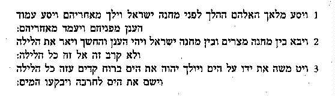
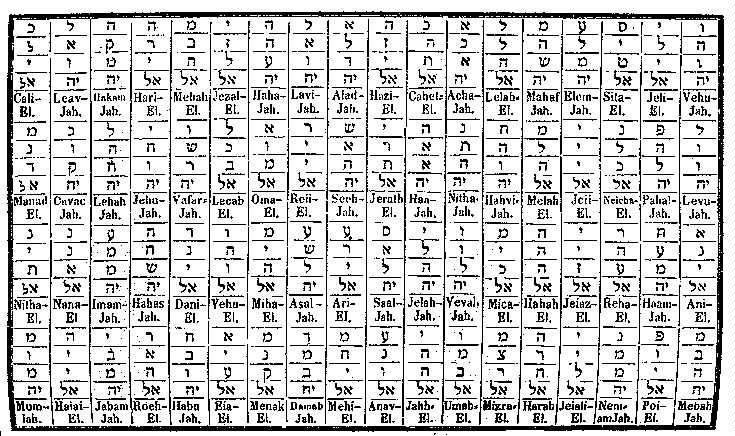

Not all people know that the Mercury Spirits as detailed in Bardon's PME are derived from the Bible. Therefore they are a piece of Western Mysticism, a part of the Quabbalah which is according to Yudelove: "an esoteric, or hidden, explanation of the meaning of the Torah. The Torah is the first five books of the Bible. It is said to have been written by Moses and consists of the books Genesis, Exodus, Numbers, Leviticus, and Deuteronomy. It is handwritten on scrolls in synagogues all over the world and printed in Hebrew, English, French, Chinese, and so on, in every Bible published anywhere on earth. It would appear obvious that mystical traditions would arise among the jews, just as they did in all other religions. The Kabbalah was a secret tradition for most of its history. It was an oral tradition handed down from master to disciple."
Kabbalists believe that from many parts of the Holy Bible can be extracted
Holy Names or names of Angels.
The Angelic Names of the Mercury Spirits are
contained within 3 verses of the 2nd book Mosis, namely Exodus: chapter 14,
verse 19, 20 and 21.

The three verses translate to English as follows
(thank
you DD!):
Everyone of those 3 verses is composed exactely from 72 letters (The Hebraic alphabet reads from right to left!). These 3 verses are written one beneath the other but the 2nd one has to be written inversely. Then the 3 letters of each row form one Angelic Name to which has to be appended the key of power suffix -al or -iah, -al meaning "Power" and -iah meaning "Mercy".

(Source Agrippa: book III, chapter 25)

This page hosted by  Get
your own Free Home Page
Get
your own Free Home Page